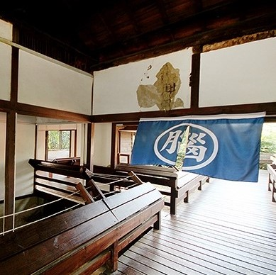

角板山樟腦收納所
🚂📦📦角板山樟腦收納所之部分建築，位於角板山行館旁的角板山樟腦收納所，建於昭和14年（1939）。 在清末日治時期，台灣的樟腦產量最高曾佔世界七成之多，因此有「樟腦王國」之稱，而角板山則是北台灣伐樟製腦的集散中心，日人更建立輕便台車，以順利將樟腦運至大嵙崁（今大溪），再藉由大漢溪運至台北、出口至世界各地。明治34年（1901），台灣總督府專賣局成立，將樟腦相關事務納入。
🚂📦📦大正8年（1919），為加強控制和減低成本，以官辦民營的生產方式，成立「台灣製腦株式會社」。昭和9年（1934）臺灣總督府解散製腦株式會社，將原料與成品的製造改由専賣局統轄。1945年國民政府遷台 後，樟腦生產仍維持專賣制度，1967年台灣省樟腦煉製廠裁撤，取消樟腦公賣制度。